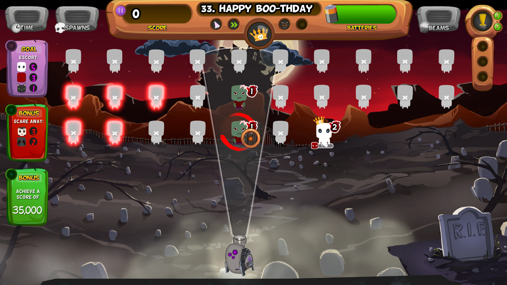
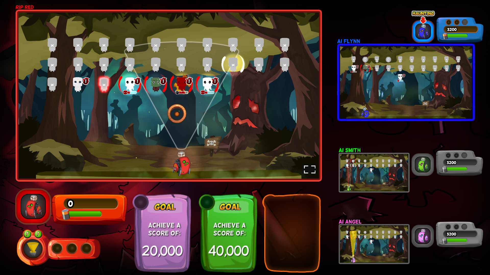
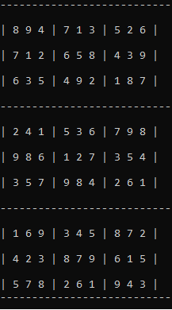
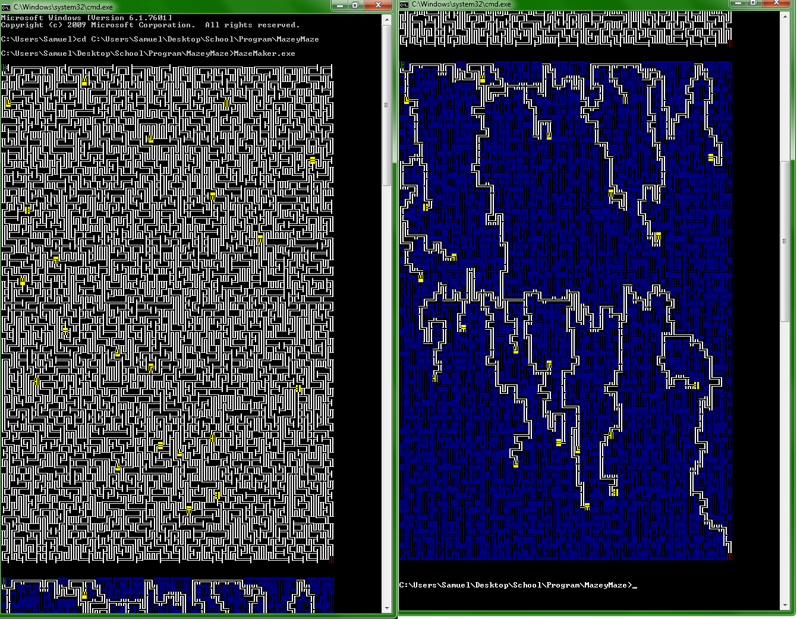

My name is Samuel Meyerding, and I would like to say welcome to my webpage.
I decided to go for a simple look that's easy on the eyes in order to
save time and because I quite like the look. I'm a computer scientist
with a bachelor's degree in Computer Science and Software Engineering
from the University of Washington Bothell.
Below is a list of some of my more favorite computer science projects I've worked
on in my life.
Ghostlight Manor (C# & Unity)
I was the developer lead for Ghostlight Manor until April 2019. Ghostlight Manor is
a 2-d game made in Unity using C#. While I was the developer lead, I added
AI opponents, split screen multiplayer over a network, a new UI navigation system for
controllers, various redesigns of UI for different parts of the game, and a new
tutorial for multiplayer. All of these changes have been pushed to the Steam build of
the game.


Sudoku Solver (C++)
I had an idea for a fairly simple sudoku solver in 2020. It is a brute force solver that
stores the values that are currently being used by each row, column, and square
so that it can determine which values can be inserted into each row, column, and
square more quickly.

Corrupted (C# & Unity)
I worked on Corrupted for a year starting during June 2017. It is a 2-d Unity game that is
a mash up between a match 3 game and a spin on Breakout. When I first started
working on Corrupted, it was a very buggy mess of a game. The first build of the
game I played was called SomehwatWorkingCorrupted. It had optimization issues, crashes,
features that didn't work, and multiple game breaking bugs. It is currently a working
demo.
Toast Lovers! (Javascript)
I worked on a 2-d tower defence game in 2018 with a custom Javascript game engine for a class
called 2-d Game Engine Development. There were two other people working on this project, and
we made the game in three weeks. The game was about defending a piece of toast in the middle
of the map from ants. The game works best in Firefox.
Developers
Dylan Katz
Samuel Meyerding
Ryan Vichitthavong
Implemented a disjoint set algorithm for generating a maze in 2015. Algorithm’s
worst case was nearly linear. After the maze was generated, treasures were
added in random locations. The maze was then explored with a recursive depth
first traversal that found the path from start to finish that would find all
of the treasures. Below is a screenshot of this program's output. Here's a link
to a github page with a Linux and Windows versions of the code
Maze

2-D platformer made in Unity Game Engine (C#)
I have been making a 2-D platform game in Unity on and off since the summer
of 2015. This project is still unfinished, but I’ve learned a lot doing it.
It’s the first thing I worked on in C#. Below is some test footage for this game. Also,
my brother made the sprite for the on screen character.
Simulation of Movie Store Inventory (C++)
This was a collaborative project where I worked with Tiana Greisel in 2016. We
implemented an inventory tracker for a movie store that read customers,
moveis, and transactions from text files and stored all of that information
in data structures. The customers were stored in a hash table, the transactions
were stored in a linked list that was part of each customer, and the moveis
were stored in a binary tree.
Dungeons and Dragons Combat Simulator (C++)
This was a program I made in 2014 to simulate combat between two characters
in dungeons and dragons and collect statistical data on which character
would win fights the most often. The original purpose of this software
was to prove that using two weapons is not a viable strategy compared
with using a single weapon with both hands. I eventually added the ability
to fight a slime creature that would split into 2 slimes with half as much
health whenever it was hit with a weapon.
Diablo Two Character Editor (C++/C#/Unity)
I have implemented a simple character editor for the Median XL mod of
Diablo Two that supports editing class, stats, health, skills, level, and
gold. I started this project in 2020, and I’m currently working on a Unity version.
The biggest hurdle with this was figuring out the nonstandard bit
lengths for each of these attributes and their ids. Each of these
attributes has a nine bit id followed by a value that can be 8, 9, 11, 13,
21, 25, or 32 bits in length depending on the attribute.
Eight Queens problem Solver (C++)
This was a program I made in 2020 to find all of the possible solutions to the Eight Queens problem
This is the problem of placing eight queens on a chess board without any of them being
able to take eachother. I had the idea of storing the positions of the queens as a 64
bit value with an adjacency matrix that is also stored as a 64 bit value. For each possible
queen position, it generates an adjacency matrix with all of the positions a queen in that
position could move into. When a queen is inserted into a position, the resulting adjacency
matrix is found with a bitwise or between the current state of the board and the adjacency matrix for
a queen in that position.
Magic the Gathering Web Scraper (C#)
I made this in 2020. Essentially what it does is gets information from the Gatherer website
on a list of cards and makes an html file with all of the information from the cards in the list.
This makes it easier to look at a list of cards because I can look at all of the information
in one tab rather than an individual tab for each card.
Grading Software (C++)
This was a program I made in 2015 to compile all of the assignments in a folder
that followed a specific naming convention. It would then run all of
the executables and save their output to a text file. It was only compatible
with Windows. I made this as a favor for the professor that I helped
with grading.